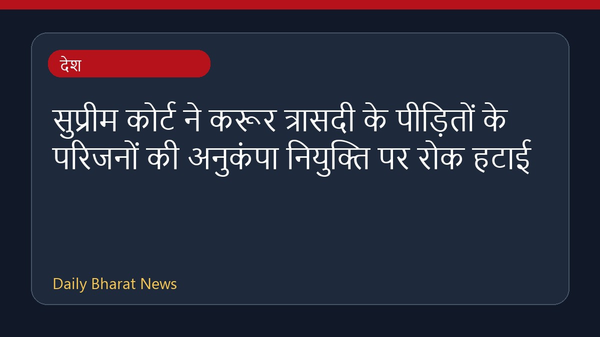

सुप्रीम कोर्ट ने करूर त्रासदी के पीड़ितों के परिजनों की अनुकंपा नियुक्ति पर रोक हटाई

भारत के उच्चतम न्यायालय ने मद्रास उच्च न्यायालय के उस फैसले पर रोक लगा दी है, जिसमें करूर भगदड़ की घटना के पीड़ितों के परिजनों के लिए अनुकंपा के आधार पर दी जाने वाली नियुक्तियों को रद्द कर दिया गया था। अदालत की इस कार्रवाई से पीड़ित परिवारों को बड़ी राहत मिली है। इस मामले में सुनवाई के दौरान न्यायालय ने टिप्पणी की कि क्या सरकार को रोजगार नहीं देना चाहिए? इस फैसले से संबंधित अन्य कानूनी पहलुओं और विवरणों की जानकारी अभी सीमित है।
मूल स्रोत: India News Sources
BREAKING| Supreme Court Stays Madras HC Judgment Quashing Compassionate Appointments For Karur Tragedy... - Live Law ↗
BREAKING| Supreme Court Stays Madras HC Judgment Quashing Compassionate Appointments For Karur Tragedy... - Live Law ↗